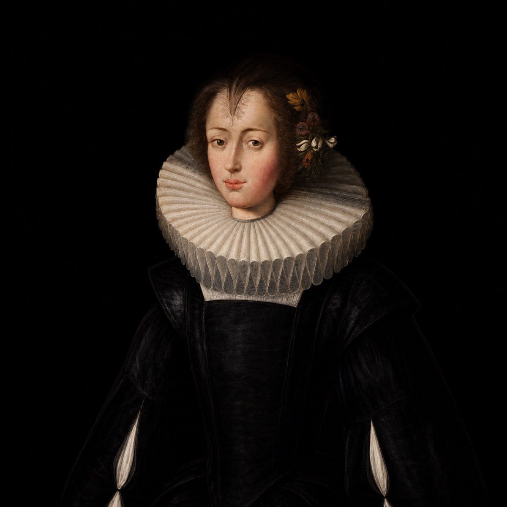
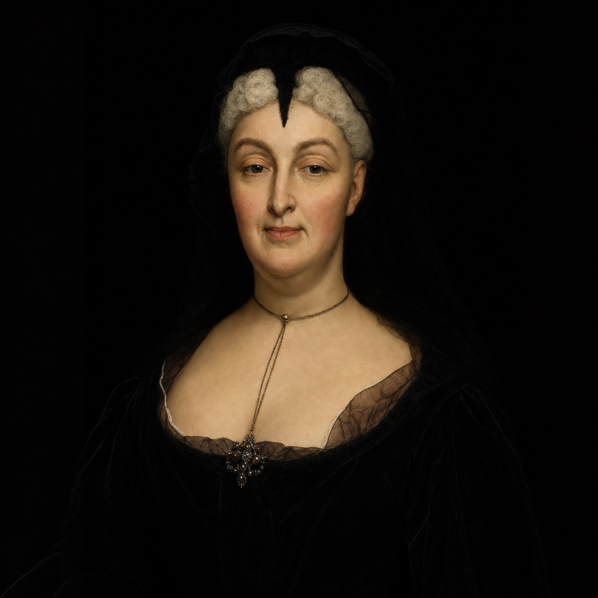
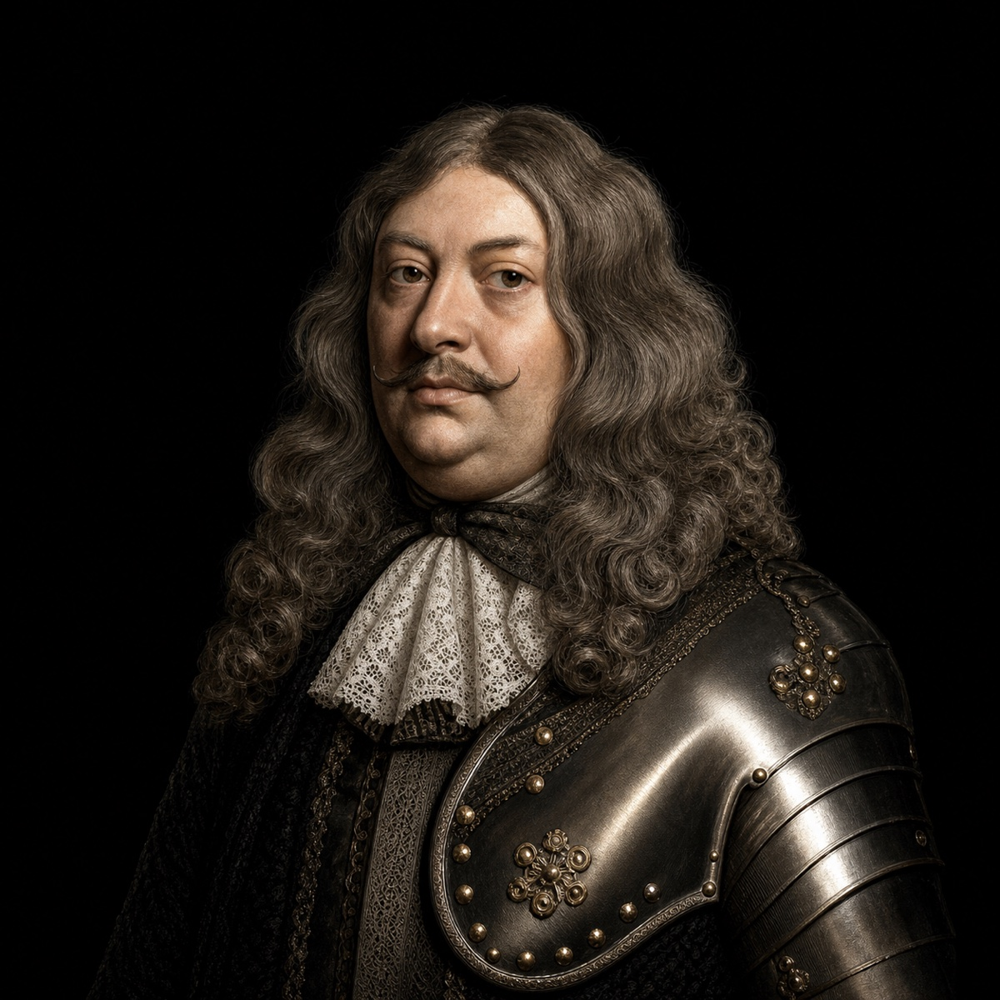
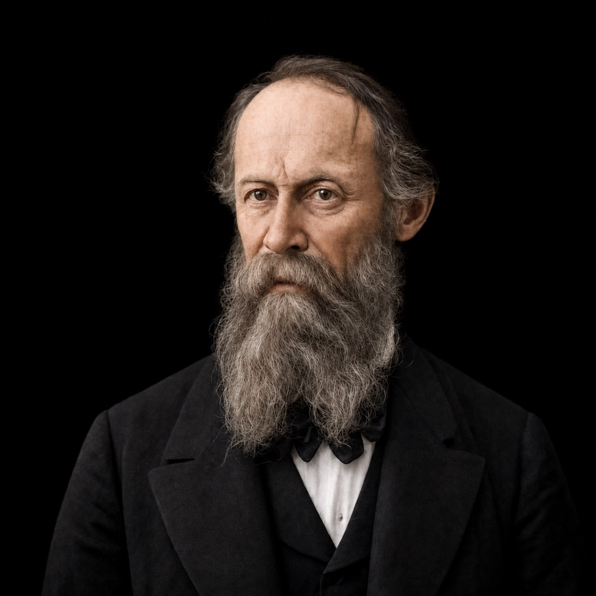
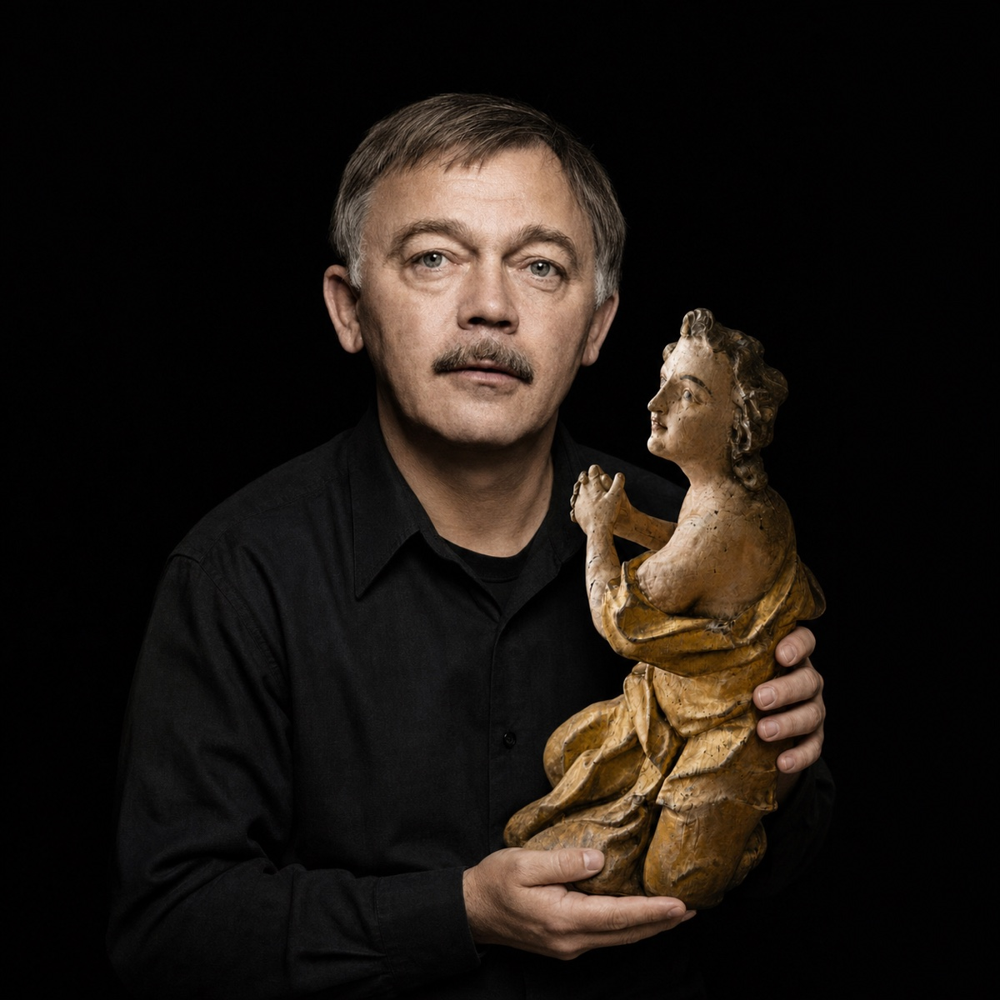

Barokní klenot,
v srdci Ostrova
Čtyři barokní stavby, jeden příběh víry, zkázy a znovuzrození. Posvátný okrsek v Ostrově vznikal v letech 1644–1710 – a dnes v něm ožívá umění baroka i první interiérový 360° videomapping v Česku.
Naplánujte si návštěvu
Vstupenky zakoupíte v pokladně areálu na adrese Klášterní 141/D. Každou celou hodinu navíc v kapli sv. Anny startuje 360° videomapping Carpe diem – Memento mori. Zakoupením vstupenky přispíváte na péči o tento unikátní barokní areál.
Vstupné
S tištěným průvodcem · vlastním tempem
Út–Pá 10:00 a 14:00 · So–Ne 10:00, 13:00 a 15:00
Senioři 65+, studenti, ZTP, děti od 6 let
2 dospělí + max. 3 děti · děti do 6 let zdarma
Vstupenky koupíte na místě v pokladně
Rezervovat se nemusí, stačí přijít. Dotazy rádi zodpovíme na +420 728 801 124
Otevírací doba
Příběh čtyř staletí
Klášterní areál v Ostrově, zvaný Posvátný okrsek, tvoří jedinečný soubor barokních staveb z let 1644–1710: pohřební kaple sv. Anny, piaristický klášter s kostelem Zvěstování Panny Marie, kaple sv. Floriána a kaple Panny Marie Einsiedelnské.
Areál, který nechali vybudovat vévodové sasko-lauenburští a markraběnka Sibylla Augusta Bádenská, prošel po desetiletích devastace velkolepou obnovou v letech 2001–2007. Dnes v něm objevíte stálé expozice Církevní umění západního Krušnohoří a Zničené kostely na Karlovarsku.

CARPE DIEM – MEMENTO MORI
Užívej dne. Pamatuj na smrt. První interiérový 360° videomapping v Česku rozehrává barokní kupoli pohřební kaple sv. Anny příběhem čtyř ročních období, života a věčnosti. Projekce každou celou hodinu.
OBJEVIT VÝSTAVUNávštěvníci mluví za nás
„Obnova areálu je malý zázrak. Videomapping v kapli sv. Anny nám vyrazil dech – něco takového jsme v Česku ještě neviděli."
„Komentovaná prohlídka byla skvělá, průvodkyně vyprávěla s obrovským zápalem. Děti si užily i program pro rodiny."
„Klidné místo s úžasnou atmosférou, ideální zastávka cestou do Karlových Varů. A vstupné víc než férové."
Napsali o nás

Ostrovská pohřební kaple sv. Anny ožívá díky unikátnímu videomappingu
arrow_outward
Ostrov nad Ohří nabízí zázrak i osmý div světa. Černá Madona je dodnes opředena legendami
arrow_outward
V barokním klášteře v Ostrově bylo kdysi gymnázium. Studoval tam i Josef Loschmidt
arrow_outwardVýznamné osobnosti spjaté s klášterem

Anna Magdalena
Zakladatelka koleje a kostela
Julius Jindřich
Zakladatel Posvátného okrsku

Sibylla Augusta
Barokní mecenáška

Julius František
Dokončitel kláštera
Johann C. F. Fischer
Barokní skladatel

Johann Josef Loschmidt
Fyzik a chemik
Zita Kabátová
Herečka · Klášterní škola

Příběh anděla Karla Kryla
Anděl se vrací domů
Nejbližší akce
Načítám program z KKC Ostrov…
Dění v klášteře

Carpe diem – Memento mori: 360° videomapping v kapli sv. Anny
První interiérová 360° projekce v Česku. Světlo, zvuk a barokní architektura vás vtáhnou do víru času – od jarního rozpuku po zimní ticho.

Koncerty v klášterním kostele Zvěstování Panny Marie

Klášterní slavnosti s tradiční poutí
Časté otázky
Jak koupím vstupenky?add
Vstupenky zakoupíte přímo na pokladně areálu (Klášterní 141/D). Komentované prohlídky začínají Út–Pá v 10:00 a 14:00, o víkendech v 10:00, 13:00 a 15:00. Místo na videomapping si můžete rezervovat online přes KKC Ostrov.
Kolik času si mám vyhradit?add
Samostatnou prohlídku s tištěným průvodcem zvládnete vlastním tempem. Včetně videomappingu (cca 15 minut) a stálých expozic počítejte zhruba s 1–2 hodinami.
Platí děti vstupné?add
Děti do 6 let mají vstup zdarma. Od 6 let platí snížené vstupné (60 Kč samostatná / 90 Kč komentovaná prohlídka). Rodinné vstupné pro 2 dospělé a až 3 děti pořídíte od 290 Kč.
Kdy je zavřeno?add
Každé pondělí a celý únor a březen. Ve státní svátky 8.–9. května a 5.–6. července máme naopak mimořádně otevřeno od 12:00 do 16:00.
Jedeme s velkou skupinou – co pro nás platí?add
Skupiny nad 20 osob mají komentovanou prohlídku za zvýhodněných 80 Kč na osobu. Návštěvu doporučujeme ohlásit předem na +420 728 801 124, rádi vám prohlídku připravíme na míru.
Je areál přístupný s omezenou pohyblivostí?add
Držitelé průkazu ZTP a ZTP/P mají nárok na snížené vstupné. Areál prošel kompletní rekonstrukcí; konkrétní potřeby přístupnosti vám rádi ověříme na telefonu +420 728 801 124 ještě před návštěvou.
Buďte v obraze
Koncerty, slavnosti a novinky z Posvátného okrsku. Jednou měsíčně, žádný spam.
Děkujeme! Novinky vám budeme posílat na e-mail.
Sledujte život v klášteře
photo_cameraSLEDOVAT @KKC_OSTROV